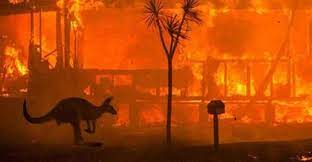

[1]호주산불

[1] 2019년부터 2020년까지 호주의 산불 시즌은 기후변화의 영향 중에서도 극단적인 예시였습니다. 약 5천만 에이커가 불탔고, 최소 34명이 사망했으며, 거의 6천 채의 건물이 파괴되었습니다. 과학자들은 광범위한 화재를 초래한 매우 위험한 조건들이 기후 변화가 없는 세계와는 반대로 기후 변화가 있는 세계에서 최소한 30%의 가능성이 더 높다는 것을 발견했습니다.
[2]기온상승
[2] 매년 이 이야기는 들려옵니다, 2020년에도 예외가 아니었습니다. 올해 8월은 육상과 해양 표면을 합한 온도가 평균보다 0.94°C 높게 나타나, 1880년 기상관측이 시작된 이래 전 세계적으로 두 번째로 뜨거운 달이 되었습니다. 현재 기록상 2016년이 현재까지는 가장 무더운 8월로 기록되었습니다.
[3]화재
[3] 올해까지 캘리포니아의 400만 에이커 이상이 산불에 의해 피해를 받아 왔습니다. 이는 미국에서 1년 동안 가장 많은 토지가 불에 탄 이전 기록의 두 배가 넘는 수치인데, 문제는 아직 산불 발생 시기가 끝나지 않았다는 겁니다. 과학자들은 기후변화가 이들의 동인이라는 점에 동의하고 있습니다.